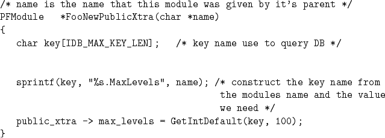
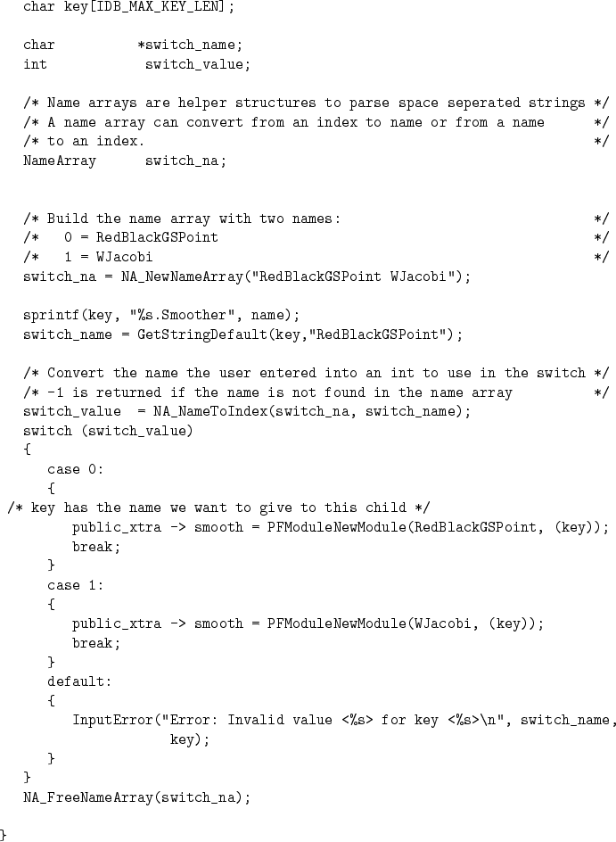

Input into is done using a TCL script and a simple database system. The database system is based on key/value pairs. The user sets values in the input file using the pfset command. When the pfrun routine is executed it creates a runname.pfidb file which contains the key/value database. Inside the code the database is read in using the IDB_NewDB command. The database is then queried using a set of macros GetType and GetTypeDefault where Type is one of String, Int, or Double. All of these routines take a key value as input. The default versions also take a default value (of the appropriate type).

The input is divided into two logical sections. The first is general global problem setup. This contains items like the geounits. The other section is used to set up the modules. Each of the modules has a name which is based on the call tree. It starts with ``Solver'' and each module appends names to this. In this way each module instance can have it's own input. A module retrieves module specific values based on the name that is passed into the NewPublicXtra routine.

When a module instantiates a module which it is going to invoke it passes in it's module name with an addition name appended to. The parent modules name their children. For example an iterative solver would pass into a preconditioner MyName.Precond (where ``MyName'' would be what this module was given as it's name). This constructs a tree like nameing convention to ensure that each module instance has a unique name to use as a key for getting input that is specific to that module instance.
In some cases you want to provide a choice on which module should be used. For example you might wish to let the user choose amoung several different preconditioners. This is done by querying the database for the name of the preconditioner to invoke and using a standard switch statement to invoke the appropriate NewModule routine.
